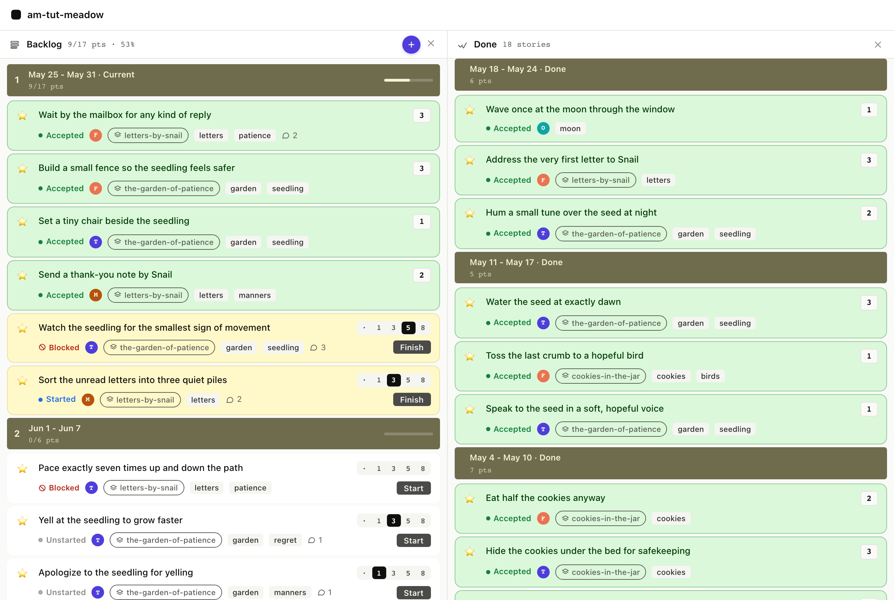

The Done panel
8. The Done panel
Done is what shipped, grouped by the iteration it shipped in. The bands are facts: once a story was accepted in week N, that's where it lives forever. agilemarkdown doesn't re-bin Done by current velocity or any other moving target.
8.1 What shows up
The Done panel filters every story where:
statusisaccepted, and- the
acceptedtimestamp falls in a prior iteration (not the current one).
Stories accepted in the current iteration stay in the Backlog
band above the in-flight line. The moment Monday's tick advances
the current iteration number, those accepted stories silently
roll into Done without any batch job or archive step; the row and
the file are the same, but the filter result is different because
now advanced.

$ am show done
Done (stories) 18 stories
── Iteration 1376 Mon May 11 ──
1. ★ Wave once at the moon accepted 1p
2. ★ Address the very first letter accepted 3p
3. ★ Hum a small tune over the seed accepted 2p
── Iteration 1375 Mon May 04 ──
4. ★ Water the seed at exactly dawn accepted 3p
5. ★ Toss the last crumb accepted 1p
6. ★ Speak to the seed softly accepted 1p
... and so on for prior iterations
done_list returns the same rows, newest first, with the
accepted ISO timestamp on each. The client groups them by
iteration in the UI; the API just hands you the list.
Full envelope
{
"jsonrpc": "2.0",
"method": "tools/call",
"params": {
"name": "done_list",
"arguments": { "backlog": "stories" }
}
}
Response: result.structuredContent.items is an array sorted
descending by accepted timestamp. Each row has the full
OrderRow shape, same one as priority_list, so a client
can render a Done card identically to a priority card.
8.2 The Friday retro
am retro reads the same accepted-story timeline shown above and
folds in this iteration's headline numbers: velocity, volatility,
cycle time, rejection rate. Print it before the team sits down on
Friday and there is a starting agenda. Anything the team wants to
remember coming out of the conversation goes into
.am/learnings.md via record-learning. The retro view prints
those back under "Recent learnings", so the next Friday's retro
starts by reading them.
There is no agilemarkdown surface for the retro itself, so the
team can use a whiteboard, a markdown file, or anything else.
agilemarkdown supplies the summary view (am retro) and remembers
what comes out of the conversation in .am/learnings.md, both of
which are plain files in the repo.
$ am retro
Retro summary
velocity: 7 pts
volatility: 22%
cycle time: 21.2d (median)
rejection rate: 0% (latest, target band 5-15%)
accepted total: 21
rejected total: 1
Three questions:
1. What worked?
2. What did not work?
3. What changes for next iteration?
Recent learnings:
- On the morning of 2026-05-07: yelling at the seedling
did not help. We have agreed to try kindness instead.
- On the afternoon of 2026-05-14: the cookies were better
when shared. We will remember this.
$ am record-learning "Pointing the gnarly one first kept the rest honest."
- 2026-05-28: Pointing the gnarly one first kept the rest honest.
record_learning appends a dated bullet to .am/learnings.md and
returns the line it wrote. There is no separate retro MCP tool; the
summary is a human-facing CLI surface. Agents participate by recording
what came out of the conversation.
Full envelope
{
"jsonrpc": "2.0",
"method": "tools/call",
"params": {
"name": "record_learning",
"arguments": {
"note": "Pointing the gnarly one first kept the rest honest."
}
}
}
Response: result.structuredContent.entry is the dated line that
was written; result.structuredContent.path is .am/learnings.md.
What just happened
priority_listanddone_listare mutually exclusive filters over the same underlying data. A story is in exactly one of them at any moment, decided by the timestamp.- The iteration bands in the Done panel are derived from each
row's
accepteddate, not from "current iteration minus N". A story shipped in May 4's week stays under "May 4" forever. - Release markers shipped in the past appear here too, anchored
to their
accepted(ship) date. am retroreads the same accepted-story data and adds the iteration's numbers, so the Friday meeting has an agenda without a separate setup step.- Learnings recorded with
record-learningaccumulate in.am/learnings.mdand surface in the next retro's "Recent learnings" section.
Next: Find things three ways →